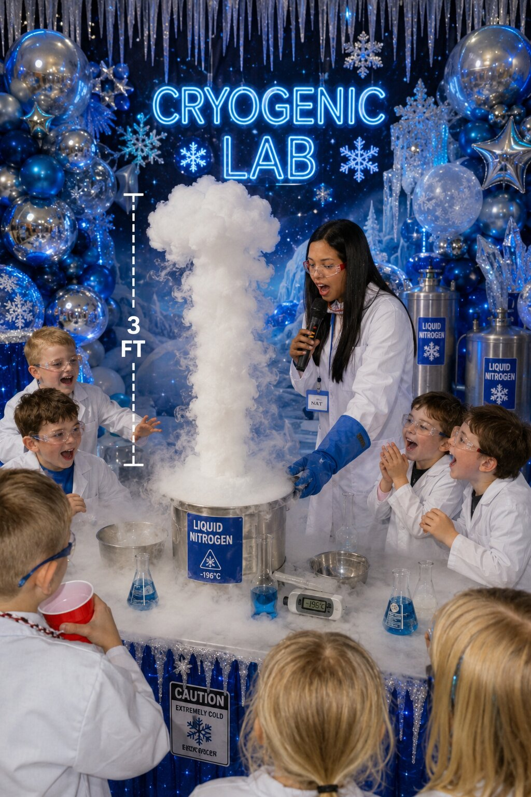
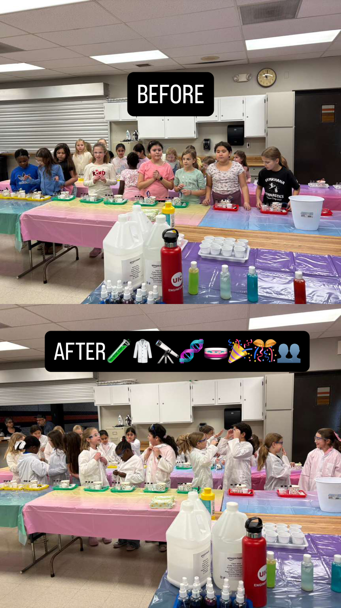
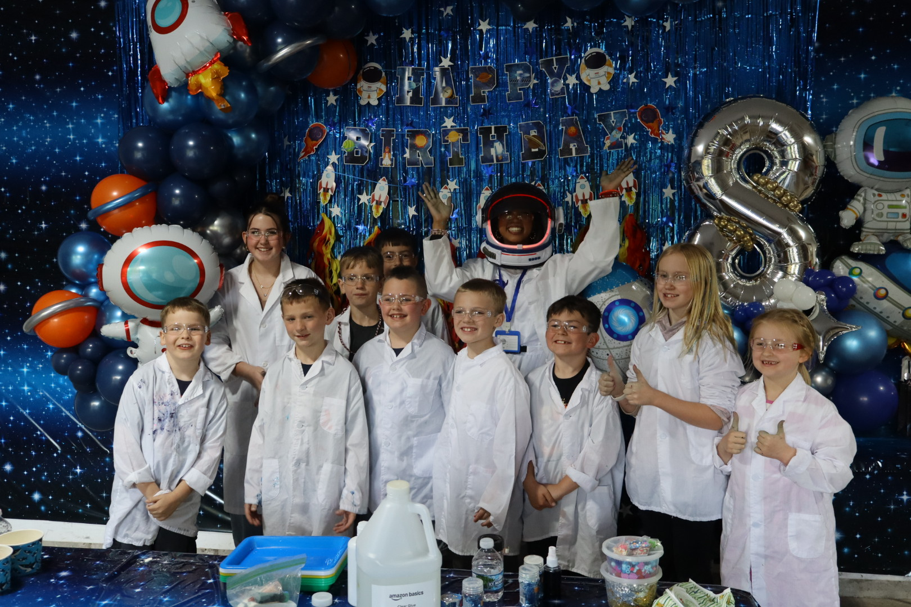
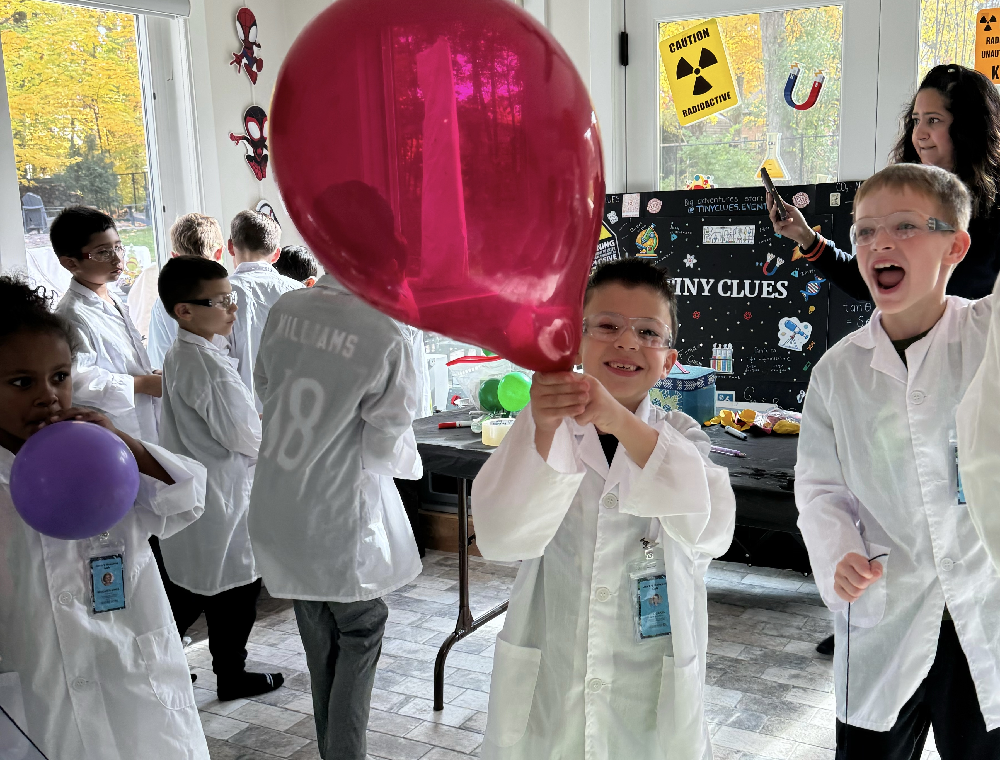

Exciting for kids
Colorful chemical reactions, SLIME, ice cream, and more hands-on experiments that keep kids engaged for the entire party.
Premium science parties in the Greater Chicagoland Area
Tiny Clues Science brings a real hands-on science lab to your party — complete with lab coats, exciting experiments, guided activities, and magical moments parents love to capture.
Not just a party activity
Parents want something memorable. Kids want something exciting. Tiny Clues Science brings both. Children get to wear lab coats, explore real science, complete fun experiments, and feel like the stars of their own science lab.
Colorful chemical reactions, SLIME, ice cream, and more hands-on experiments that keep kids engaged for the entire party.
We bring the materials, guide the activity, and clean up our experiment station after the workshop.
Every activity connects to real science concepts in a simple, age-appropriate, exciting way.
What it feels like
The goal is not to overwhelm kids with complicated science. The goal is to make them feel curious, confident, and we guarantee to amaze them. They get to actually perfom science experiments (not just watch!) — while parents enjoy a polished activity that looks beautiful in photos.
Choose your experience
Each package is designed to feel premium, interactive, and age-appropriate. Pricing may vary depending on event size, travel distance, and selected add-ons.

Most Popular
Recommended age: All ages
A premium hands-on science party with four exciting experiments. Perfect for birthdays, school events, and kids who love slime, reactions, colors, and surprises.
Ask about our Science Squishies Experiment!
Up to 30 kids per round
Starting at $180

Big Wow Moment
Recommended age: All ages
A foggy frozen science show with dry ice demonstrations, followed by an ice cream lab where kids see how temperature can transform ingredients.
Great for larger events
Contact us for a custom quote.

For Little Scientists
Recommended age: 3–6
A creative art-and-science party where younger kids explore colors, materials, paint, and simple chemistry through a guided activity.
Up to 30 kids per round
Starting at $150

NASA-Inspired Experience
Recommended age: 5–11
A space mission training experience led by a NASA mission researcher, with an astronaut-style setup and four premium hands-on science experiments.
Up to 30 kids per round
Starting at $180
Simple booking
The deposit is required to book your workshop and is refundable only if the party is canceled at least 15 days before the event date.
Check AvailabilityWhat parents provide
One table for our setup and one activity table for the children.
Please cover all tables used during the workshop.
Helpful for hands-on experiments and quick cleanup.
Send the final number of children before the event so materials are prepared correctly.
Meet the scientist behind the magic
I created Tiny Clues Science because I believe children deserve to feel smart, curious, and excited when they learn. My goal is to make science feel magical, but also real.
I bring my background in engineering, NASA research, and science outreach into every workshop, so kids don’t just watch science happen. They become part of it.
Learn More About NataliaMore ways to learn
Tiny Clues Science also offers tutoring for students from K–College Advanced. Sessions are designed to make difficult subjects feel clearer, less stressful, and more confidence-building.
View TutoringGallery
Lab coats, colorful experiments, science stations, and picture-perfect memories.



Ready when you are
Choose your date, submit your deposit, and reserve your science workshop online.
Book a Workshop